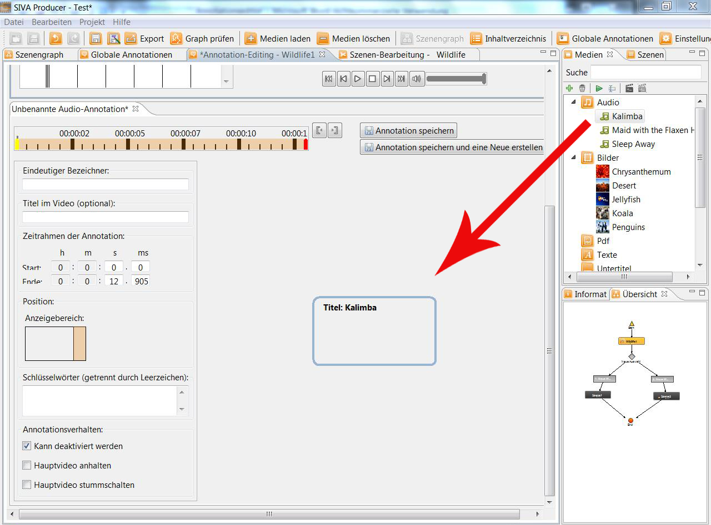

Nun können Start- und Endzeitpunkt der Wiedergabe festgelegt und ein Name für die Annotation ausgewählt werden. Außerdem können weitere Einstellungen für die Wiedergabe der Audiodatei aktiviert oder deaktiviert werden. Das Hauptvideo kann stummgestalten werden.

Für weitere Details siehe: "Erstellen von Annotationen"